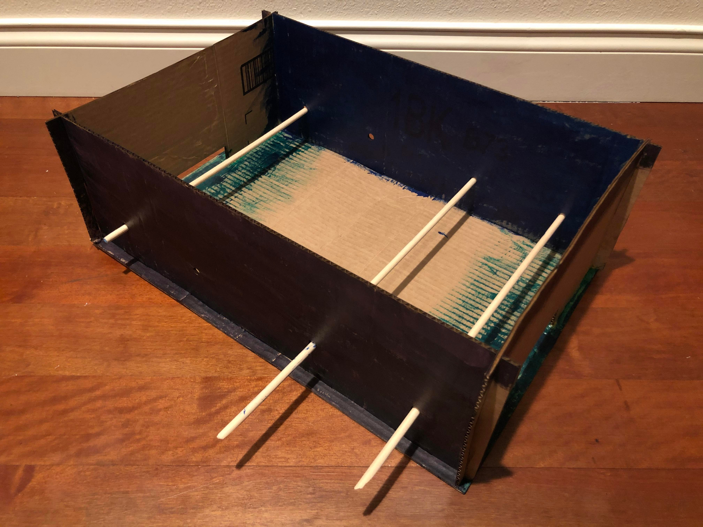
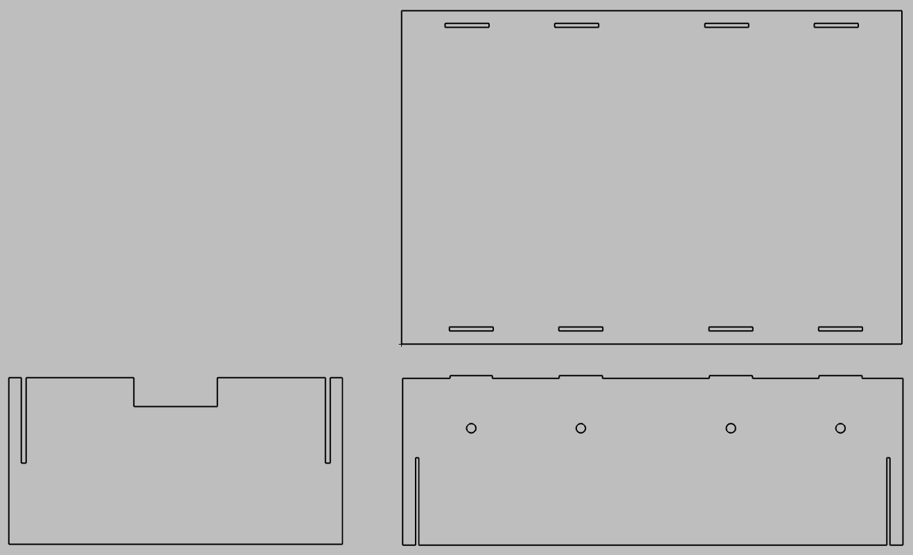
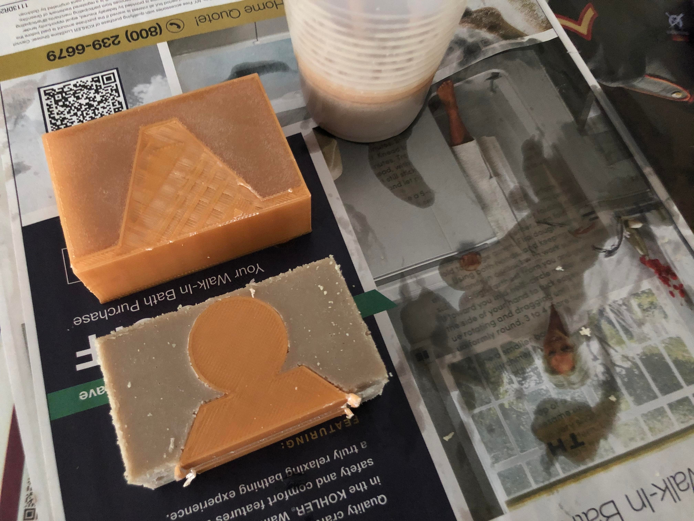
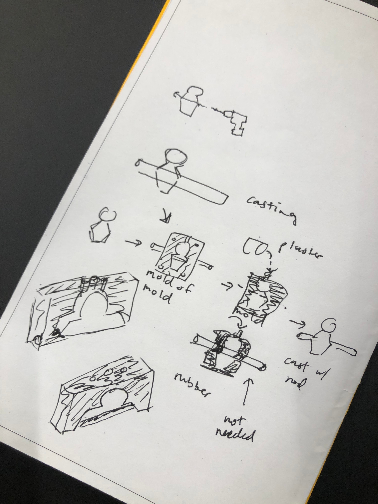
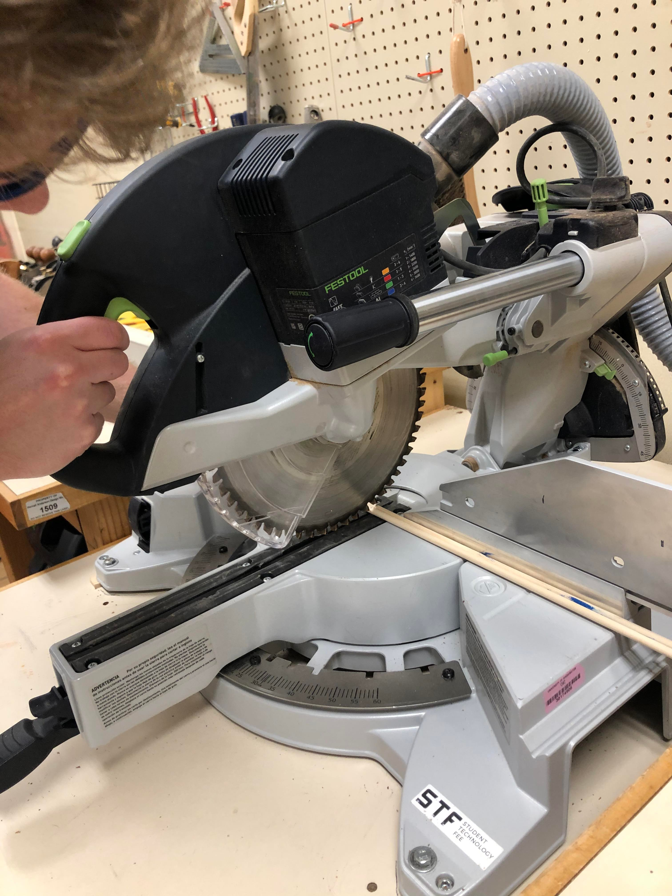
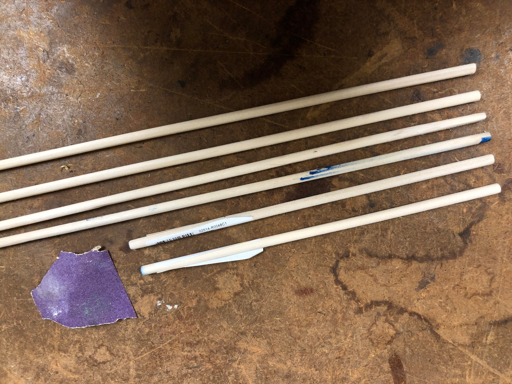

please see the project proposal for inspo + project plan~
here's the current WIP of the mini foosball table aka "fuseball"! "fuseball" is a smaller version of a popular tabletop game played by two competing players.

after taking prof. nadya's feedback into consideration (which was to simplify the models i would be using for the foosball players, keeping the size of the foosball game small-ish, and casting the mold directly onto the rods), i decided to simplify my previous sketch. i drafted a new sketch. i researched foosball tables some more, and found out that a competition-size foosball table's features are 56 inches long, 30 inches wide, and 36 inches tall, so i decided to scale it down to the cardboard measurements i had. i also found that a goal size was 7" by 2.5", so i decided to scale it down.
the sketch helped me realize that for laser cutting, i needed two "walls" with the cut-out "goals" on opposite ends that needed to fit snugly into the existing cardboard that already was foldable. i created some basic designs in rhino, inspired by the box design i found online. this would be for laser cutting!
while creating the model, i took the measurements of the stock parts, the wooden dowel rods, and made sure that there was enough space for players to rotate the rods inside the holes. i also had to consider the distance from the rods to the ground so that there would be room for the players to "kick" the ball around and spin/rotate around the rods.

i did laser cutting and then made the box (or table). i assembled it and used some wood glue (borrowed from a friend) to ensure that the pieces fit well together. it took 30 minutes to an hour for the wood glue to dry.


after laser cutting the box, i moved on to 3d printing and molding & casting! i started by drawing a basic shape of the player and after some consultation with junchao and sara, i decided to turn this mold into a two part mold with the top part which i named "heads" and the bottom part which i named "tails".
to create the mold in rhino, i created the master piece - the player - using Polyline, drew a BoundingBox with sprues and keys, split the model with a plane, deleted the face, and offset the surface of the box with OffsetSrf to add walls. i ended up spending a lot of time on this modeling compared to laser cutting the box.


i then 3d printed the molds.

and then i filled the mold of the mold with the smooth-on, which i mixed together (1:1 ratio of part A and part B into the texture of pancake batter after 3 minutes of stirring).

the next steps are to finish the mold and cast the players directly onto the wood dowel rods in hydrostone (leftover from previous assignment), and then assemble the foosball game altogether.
i gave a presentation. it went ok?
i had a moment of failure when i realized that i could not remove the rubber from the 3d printed mold easily due to how i had designed the 3d printed mold. i did not think how it would come off.

i talked to my friend, isaac, who has a bachelor of science degree in computer science and engineering about my mold problem. i tried to sketch out my concept in an effort to explain my issue.

i pivoted to 3d printing the master instead so that this project could be delivered on time (this was not noted as a contingency, though i did consider incorporating it as a contingency), focusing on the players themselves. i successfully 3d printed one. when i tried to 3d print 7 other players at once, the 3d printer ended up creating a mess after more than five hours of printing.
i tried again, this time by applying more adhesion (read: glue) to the printer bed. in the 3d printing software, i applied "multiply all models" instead of copy and pasting each model. the software multiplied all models by making 7 more copies and aligned everything. the printing time would be nearly 8 hours, so i let it print overnight. will report back with the results!
while the players were printing, i headed to the 8's wood shop and asked a staff member to kindly saw off the long wooden dowel rods for me since i lacked experience. i was responsible for measurements, so to save on time, i chose to make the longer wooden dowel twice the length of the "goal" wall of the box and the shorter wooden dowel 3/4 of that new length. that way, people playing the game could more easily identify which dowel rod corresponded to which players - offensive or defensive.

the 8 had some sanding paper so i didn't need to purchase any! that was fantastic for me. i sanded the ends of the wooden dowel rods to ensure smoothness so that people don't injure themselves when they play fuseball. it was very easy.

i took some time to paint the box as well! i painted the walls of the box and started painting the "ground" but ran out of green paint for that, so i just left the "ground" as is. i put the rubber bands on the ends of the dowel rods and inserted these rods into the holes on the walls of the box.
as of this writing, the project is still ongoing and i am waiting for the 3d printed players to be printed~
i learned that i seriously need accountability to stick to my original plan, and for a while i truly lacked motivation to complete this project as i felt it was very overwhelming. even though my concept and execution should have been simple, and i decided not to go with new techniques, i still had a hard time. i am so thankful that i chose to go with familiar concepts in order to make this project happen.
honestly, i'm pretty proud of myself for pushing myself to work through the challenges and strive to complete this, even though it might not be perfect. i think there's a lot of room for improvement.
i ended up having to purchase the mold removal spray to aid with lifting the rubber mold (smooth-on) from the 3d printed mold as well as lifting the hydrostone plaster from the rubber mold. i haven't had a chance to use it yet.
box (rhino) / box (illustrator for laser cutting) / player (rhino)
thank you to junchao, sara, paisley, and others for their help with this final project. still working on it!